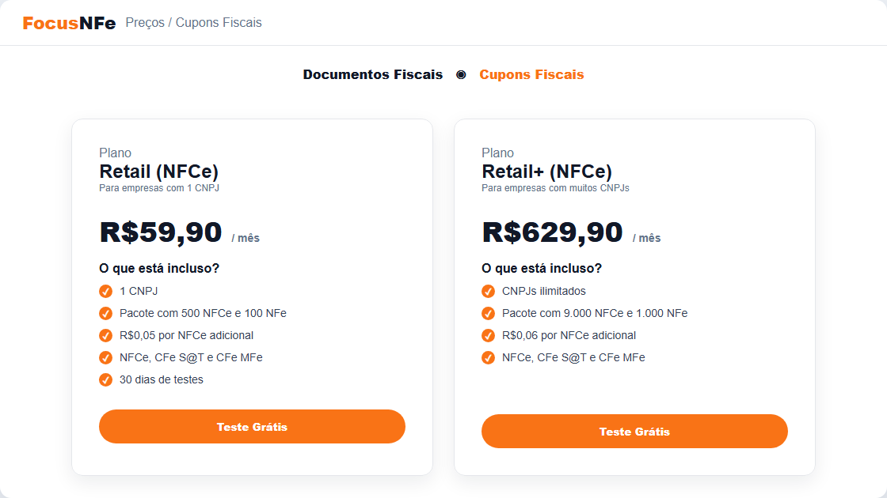
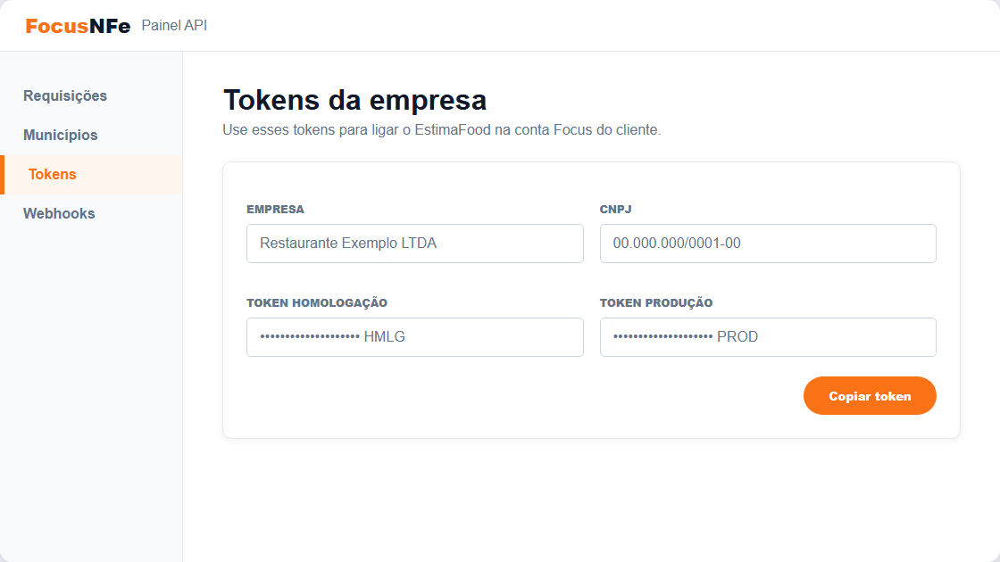
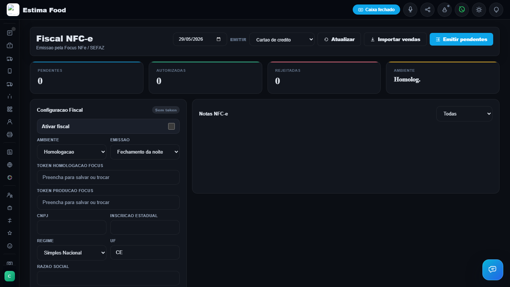
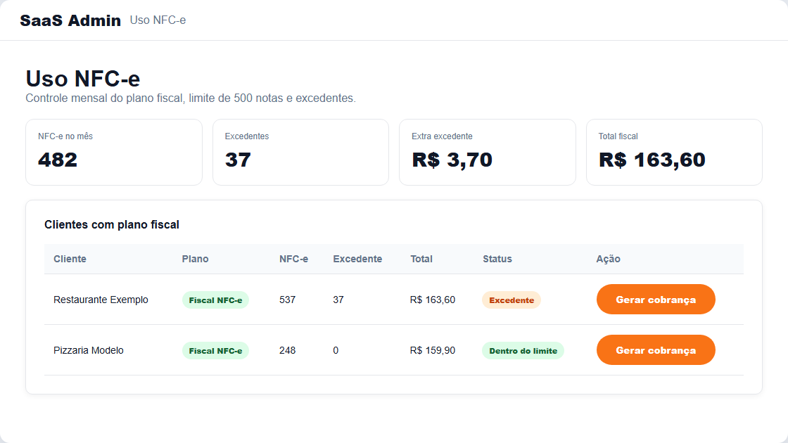

Manual para leigo
Configuração NFC-e no EstimaFood com Focus NFe
Passo a passo completo: contratar/configurar Focus, preencher o Gestor, emitir notas por filtro de pagamento e acompanhar cobrança no Admin.
Atualizado em 29/05/2026 · Plano comercial sugerido: Plano Fiscal EstimaFood R$ 159,90/mês
1. Visão geral simples
Você terá dois sistemas trabalhando juntos:
| Sistema | Função |
|---|
| EstimaFood | Recebe pedidos, salva forma de pagamento, importa vendas do dia e manda emitir NFC-e. |
| Focus NFe | Recebe os dados do EstimaFood, conversa com SEFAZ e devolve status, chave, XML e DANFE. |
Regra de ouro: o EstimaFood não emite direto na SEFAZ. Ele envia para a Focus NFe. A Focus faz a parte fiscal pesada.
2. Plano comercial que você vai vender
| Item | Valor | Observação |
|---|
| Plano Fiscal EstimaFood | R$ 159,90/mês | Inclui sistema + integração fiscal + até 500 NFC-e/mês. |
| Custo Focus por cliente/CNPJ | R$ 59,90/mês | Plano Retail (NFCe), para 1 CNPJ. |
| Sobra bruta para você | R$ 100,00/mês | Antes de impostos, suporte e outros custos. |
| Excedente | R$ 0,10 por NFC-e | Cobrado do cliente acima de 500 NFC-e/mês. |

Print ilustrativo do plano Focus Retail (NFCe): 1 CNPJ, pacote com 500 NFC-e, valor base R$ 59,90/mês.
Fonte pública consultada: https://focusnfe.com.br/precos/. Valores podem mudar no futuro; confira antes de fechar nova tabela comercial.
3. Antes de configurar: o que pedir ao cliente/contador
Antes de mexer na Focus ou no Gestor, separe estes dados:
- CNPJ da empresa.
- Razão social e nome fantasia.
- Inscrição Estadual.
- Regime tributário: geralmente Simples Nacional, mas confirme com o contador.
- Endereço completo: CEP, rua, número, bairro, município e UF.
- Certificado digital A1, normalmente arquivo
.pfx ou .p12, com senha.
- CSC/Token SEFAZ e ID CSC, quando necessário para NFC-e.
- NCM/CFOP/CSOSN padrão para os produtos, orientado pelo contador.
Ceará: confirme com o contador se o cliente vai usar NFC-e, MFe/CF-e ou algum requisito estadual específico. A Focus informa suporte a NFCe, CFe SAT e CFe MFe no plano Retail.
4. Criar/configurar o cliente na Focus NFe
1
Criar ou acessar sua conta Focus.
Entre no painel da Focus NFe com sua conta.
2
Cadastrar a empresa/CNPJ do cliente.
Cada cliente com 1 CNPJ entra no plano Retail (NFCe). Se o cliente tiver mais CNPJs, cada CNPJ precisa ser tratado no plano correto.
3
Enviar/configurar certificado digital A1.
Esse certificado geralmente vem do contador. Sem certificado válido, a emissão real não funciona.
4
Preencher dados fiscais.
Informe CNPJ, Inscrição Estadual, endereço, regime tributário e dados exigidos pela Focus.
5
Pegar os tokens de API.
Você usará o token de homologação para teste e o token de produção para nota real.

Print ilustrativo: no painel da Focus, a área de Tokens é onde você copia os tokens para colocar no Gestor.
5. Configurar no Gestor do EstimaFood
No painel do cliente, entre em Fiscal NFC-e. A tela ficou assim:

Tela Fiscal NFC-e do Gestor: data, filtro Emitir, Importar vendas e Emitir pendentes.
Campos principais
| Campo | O que colocar |
|---|
| Ativar fiscal | Ligue quando esse cliente já estiver pronto para usar o módulo fiscal. |
| Ambiente | Homologação para teste. Produção para nota real. |
| Emissão | Use Fechamento da noite para o cliente emitir em lote no fim do dia. |
| Token homologação Focus | Token de teste copiado da Focus. |
| Token produção Focus | Token real copiado da Focus. Use só quando estiver liberado para produção. |
| CNPJ / IE / Regime / UF | Dados fiscais da empresa. Para Ceará, UF = CE. |
| CSC/Token SEFAZ e ID CSC | Dados fiscais necessários para NFC-e. Peça ao contador se o cliente não souber. |
| NCM / CFOP / CSOSN | Padrão fiscal dos produtos. Precisa de orientação do contador. |
6. Fluxo correto no final do dia
Importante: o pedido precisa estar finalizado/entregue para entrar na importação fiscal. Pedido cancelado antes de emitir não conta.
1
O cliente escolhe a data do fechamento.
2
Clica em Importar vendas. Isso importa todas as vendas finalizadas daquele dia, sem filtrar por pagamento.
3
No seletor Emitir, escolhe o que quer emitir: Todas, Cartão de crédito, Cartão de débito, PIX ou Dinheiro.
4
Clica em Emitir pendentes. Agora o sistema envia para a Focus somente as pendentes do filtro escolhido.
5
Depois acompanha a lista de notas: pendente, autorizada, rejeitada ou cancelada.
Exemplo: se importar todas as vendas e escolher “Cartão de crédito” no filtro Emitir, o sistema emite só as NFC-e pendentes de cartão de crédito.
7. O que contabiliza no limite das 500 NFC-e?
| Situação | Conta no limite? | Explicação |
|---|
| Pedido finalizado, mas sem NFC-e emitida | Não | Ainda é só venda no sistema. |
| NFC-e autorizada | Sim | Passou pela Focus/SEFAZ. |
| NFC-e autorizada e depois cancelada | Sim | Mesmo cancelada, ela já consumiu emissão fiscal. |
| Pedido cancelado antes de emitir | Não | Não chegou a virar nota. |
| Pedido via cardápio pago no cartão e emitido | Sim | Conta como 1 NFC-e. |
| Mesa/garçom finalizada e emitida | Sim | Conta como NFC-e emitida. |
8. Acompanhamento no Admin
No Admin, você entra em Uso NFC-e para saber quantas notas cada cliente usou no mês, quem passou de 500 e quanto cobrar de excedente.

Print ilustrativo da tela Admin: controle mensal de uso, excedente e geração de cobrança.
O cálculo configurado ficou assim:
- Base do Plano Fiscal: R$ 159,90/mês.
- Limite incluso: 500 NFC-e/mês.
- Excedente cobrado do cliente: R$ 0,10 por NFC-e acima de 500.
- O admin conta notas com status autorizada e cancelada.
9. Reembolso e cancelamento
| Caso | O que fazer |
|---|
| Cliente pediu reembolso antes da NFC-e | Cancelar/estornar a venda no sistema e não emitir a NFC-e. |
| Cliente pediu reembolso depois da NFC-e | Cancelar a NFC-e pela Focus/SEFAZ, se estiver dentro do prazo permitido, e fazer o reembolso financeiro. |
| NFC-e rejeitada | Corrigir o motivo fiscal, normalmente NCM, CSC, IE, endereço, regime ou produto, e emitir novamente. |
10. Problemas comuns
| Problema | Possível causa | Solução |
|---|
| Sem token | Token da Focus não preenchido. | Copiar token correto da Focus e salvar no Gestor. |
| Nota rejeitada | Dados fiscais incorretos. | Conferir CNPJ, IE, regime, CSC, NCM e CFOP com contador. |
| Pedido não aparece para importar | Pedido não está finalizado/entregue. | Finalizar o pedido antes da importação fiscal. |
| Emitiu pagamento errado | Filtro Emitir estava em Todas ou forma errada. | Selecionar Cartão/PIX/Dinheiro antes de clicar Emitir pendentes. |
| Está em homologação | Modo de teste ativo. | Após testes, mudar para Produção com token real. |
11. Checklist de implantação
- Cliente contratou Plano Fiscal EstimaFood.
- CNPJ confirmado.
- Contador confirmou regime, IE, CSC, NCM, CFOP e CSOSN.
- Certificado A1 em mãos.
- Cliente cadastrado na Focus.
- Token de homologação copiado.
- Token de produção copiado.
- Dados fiscais preenchidos no Gestor.
- Teste em homologação feito.
- Ambiente produção liberado.
- Cliente treinado no fluxo: Importar vendas → escolher Emitir → Emitir pendentes.
- Admin conferindo Uso NFC-e mensalmente.